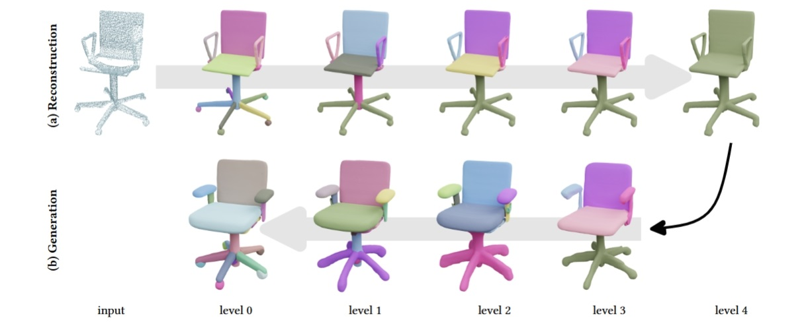

Welcome to GraphVix invited talks. We will regularly invite experts in Computer Graphics, Computer Vision, and Artificial Intelligence fields to share their fantastic work. We will try to livestream the talk at Youtube.
| Title: TBD | |
|
TeleAI, China Telecom |

Date and time: 2pm, May, 27, 2025
Abstraction: To be announced. |
| 3D-aware Video Generation with a Graphics Pipeline | |
|
Hong Kong University of Science and Technology (HKUST) |
Date and time: 2pm, April, 22, 2025
Theme: Recent research about 1) precise and highly realistic 3D reconstruction for both static objects and dynamic scenes; 2) diffusion generative models in 3D asset creation; 3) video diffusion techniques to facilitate the production of high-quality videos. |